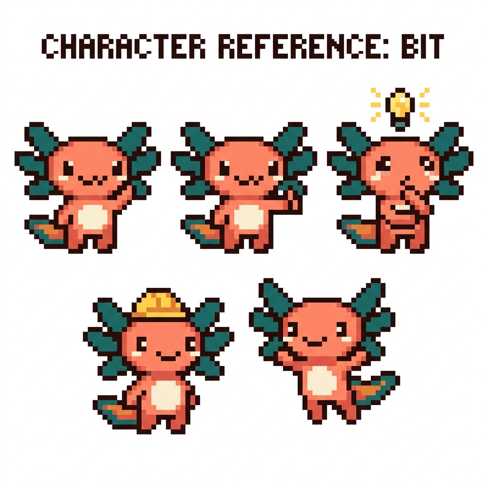

Aprende a Programar — con tus propios proyectos
Un curso completo en español, desde cero, que usa tu propio código (tunal-digital, PolyPaw, RachaSimple, Faro y tu NAS) como ejemplo real. La meta: que dejes de depender del “vibe coding” y puedas dar órdenes precisas. Te guía Bit 🦎, un ajolote pixel art.
Antes de empezar, lee Cómo estudiar este manual (en la carpeta del manual).
Módulos
Fundamentos
Cómo funciona la computadora, internet, la web, la terminal y Git.
MÓDULO 01HTML
La estructura de una página web. Fuente: tunal-digital.
MÓDULO 02CSS
Colores, tipografías, diseño y responsive. Fuente: tunal-digital.
MÓDULO 03JavaScript
Interactividad en el navegador. Fuente: tunal-digital.
MÓDULO 04Python
Lógica y apps con Flet. Fuente: PolyPaw.
MÓDULO 05TypeScript
JavaScript con tipos. Fuente: RachaSimple / Faro.
MÓDULO 06React
Interfaces con piezas reutilizables. Fuente: RachaSimple / Faro.
MÓDULO 07Bases de datos y SQL
Guardar datos con Supabase / Postgres.
MÓDULO 08APIs, OAuth e IA
Conectar tu app con otros servicios. Fuente: Faro.
MÓDULO 09NAS y servidores
Tu servidor casero polypaw-nas, redes y self-hosting.